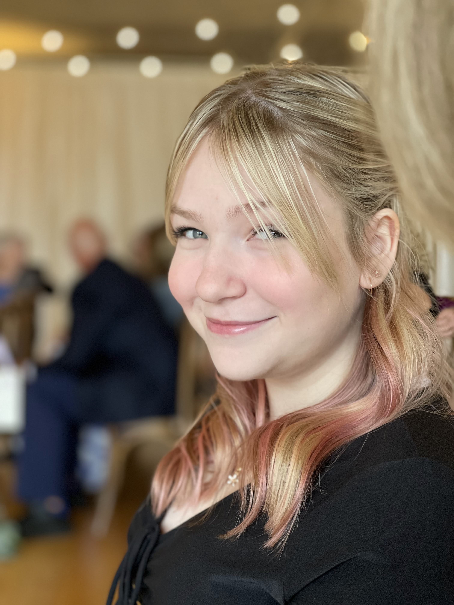
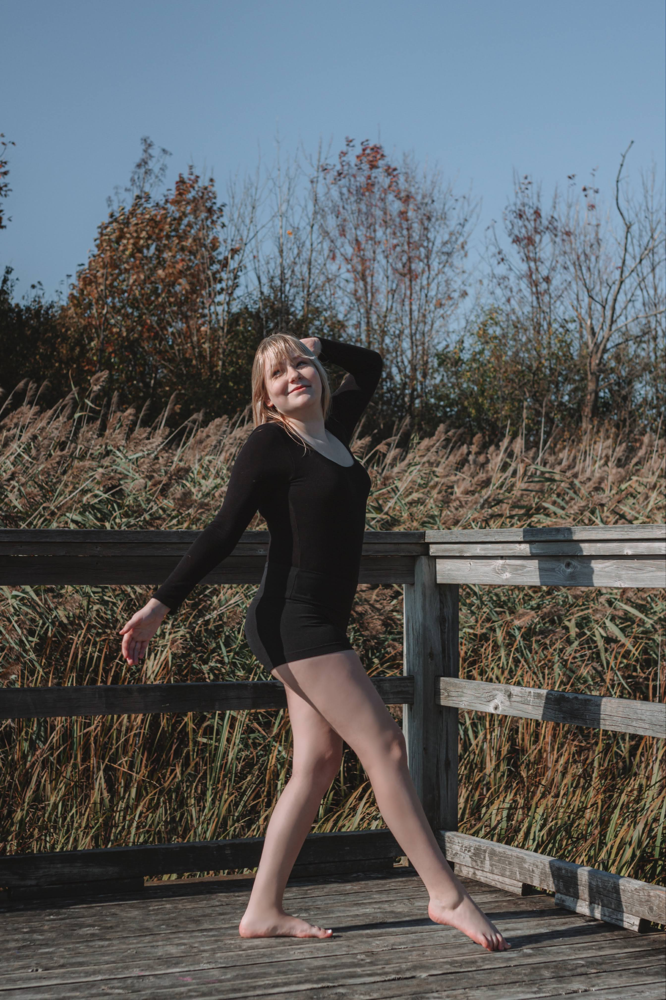

Daisy Hollohan is a 19-year-old multifaceted artist and performer based in St. Catherines, Ontario.
Growing up in Georgetown, Ontario, Daisy has always loved the arts. Even from a young age, she recalls singing, dancing, and putting on shows for her family and friends. Around age 10, she began participating in various musical theatre summer camps and workshops. At age 12, she participated in her elementary school’s musical.

At age 13, she was cast in her first official musical, Shrek Jr, with her local community theatre.
From there, she was cast as “Kitty” in a production of The Drowsy Chaperone at 14. Simultaneously, she trained with Pinecone Music in both piano and voice. Additionally, she spent a year training in intermediate jazz with Strictly Dance Studio. Throughout high school, Daisy performed in various cabarets and full-length musicals. Notable performances include Sound of Music, (Gretl), All Shook Up, (Ensemble), and soloist performances in her high school’s cabarets and art showcases. On top of this, she participated in workshops, cabarets, and vocal lessons with MVP Music outside of her school.
After graduation, she was accepted into CCPAC’s Pre-professional program and was cast as Hipster Dork/Officer Milner in their production of Heathers the Musical. She has also been invited to perform at various events on behalf of CCPAC and intends on working with them in the future. She has also been accepted into Brock University’s Dramatic arts program and is actively working towards her Honours Bachelor of Arts in Dramatic arts with a minor in English. She is also involved with Brock Dance, is training in competitive hip-hop with Fascination Dance Studio, and actively takes vocal lessons with Dani Viola, the artistic director of CCPAC